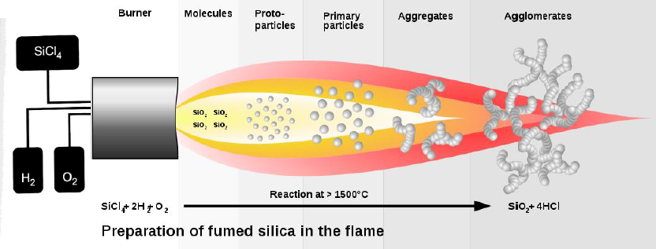
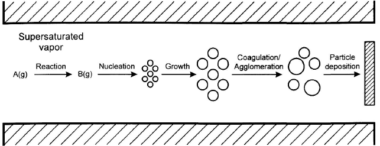
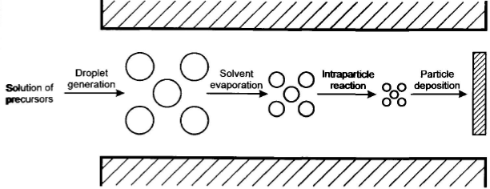
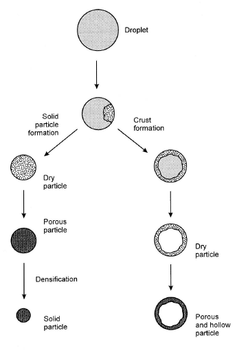

Aerosol
Gas phase powder synthesis
- Does NOT involve large volumes of liquid (compared to wet process)
- Timescale is very short
- High: Purity, yield, throughput
- Multicomponent + nanophase materials possible
- Flame hydrolysis:
- 2H\(_2\) + O\(_2\) -> H\(_2\)O
- SiCl\(_4\) + 2H\(_2\)O -> SiO\(_2\) + 4HCl 
Aerosil
- Degussa, 1942
Product:
7-40nm particles
Surface area: 50-400m^2/g, S = 6/(d*r) (surface, not pores)
200L \(\approx\) 10kg
Fumed titania also produced (as pigments)
Process routes
Terms:
Coagulation: Attachments of two particles when they collide
Coalescence: Fusion (sintering) of two particles
Agglomerates: Assemblies of primary particles physically held together by weak interactions (soft agglomerates)
Aggregates: Assemblies of primary particles hed together by stronger forces (Hard agglomerates)
Precursors often similar to what used in CVD/PVD
Two main processes:
Gas to particle conversion
- High T reaction between gases
- Homogeneous gas phase reactions. Formation of molecular or cluster compounds
- Nucleation formed from supersaturated vapour. Homogeneous nucleation from molecules or clusters.
- Particle growth, by several mechanisms: Condensation, surface reactions, coagulation. The relative rates of particle collision, coalescence and sintering are important for the shape of the obtained particles.
- Precursors: all from CVD#Precursors + more reactive ones.

Spray Pyrolysis
- Sol or slurry atomized and pass through heated area
- Solvents evaporate, particles pyrolyse or react to form particles.
- Often hollow spheres are formed
- Particle size depends on size of droplets and concentration
- Porosity controlled by concentration and thermal profile
Three types of reactors: Flame Reactor:(Flame pyrolysis) Combustion reaction to heat spray. Short residence time, max use of energy. Risk of contamination by combustion reactants.
Heating Reactor: Spray into hot furnace. Good control of: T + residence time. Growth on walls, formation of hard aggregates.
LASER Reactors: Heated by laser; efficient transfer of heat to gas. Plasma reactors. Precursors: solution from sol-gel -> atomic mixing.  
Film deposition
- Spray pyrolisys (droplet deposition)
- Evaporation of substrate
- Aerosol Assisted CVD (AACVD)
- Up to 5\(\mu\)m/min particle deposition
- 1-5\(\mu\)m/min typically
Products
Large scale: Titania, silica, Al-powder(From chlorides by flame pyrolisys) Smaller scale: Bi\(_2\)O\(_3\), Cr\(_2\)O\(_3\), Fe\(_2\)O\(_3\), GeO\(_2\), NiO, MoO\(_2\), SnO\(_2\), V\(_2\)O\(_5\), WO\(_3\), ZrO\(_2\), AlBO\(_3\), Al\(_2\)TiO\(_5\), AlPO\(_4\) Metal Synthesis: Fumed silica particles: SiCl\(_4\)(g) + 4Na(g) -> Si + 4NaCl.
Niobium metal particles: 2NbCl\(_5\)(g) + 5Mg -> 2Nb + 5MgCl\(_2\)